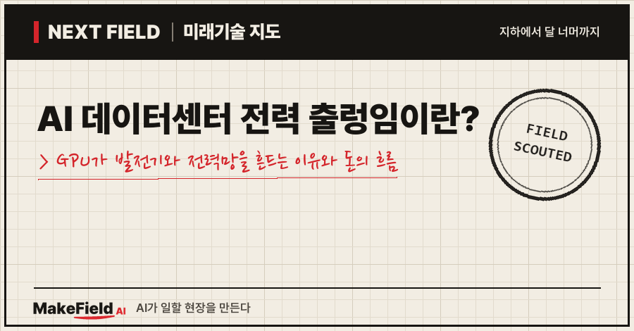
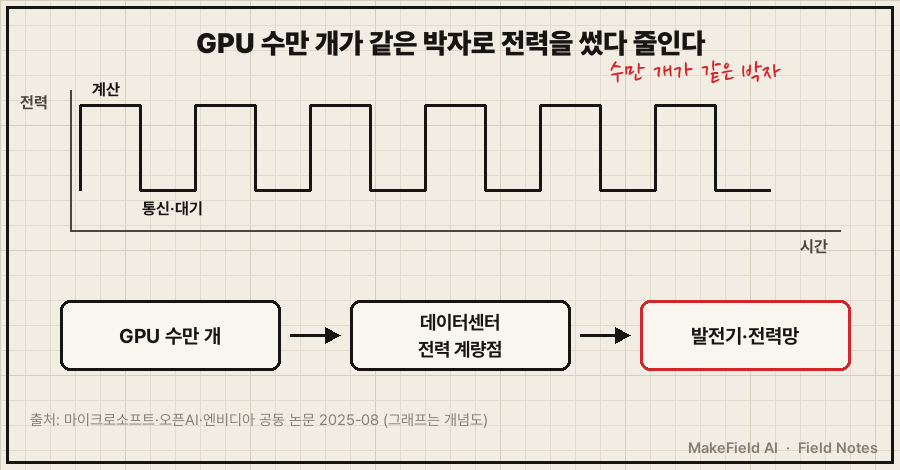
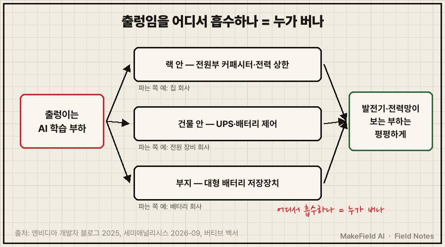
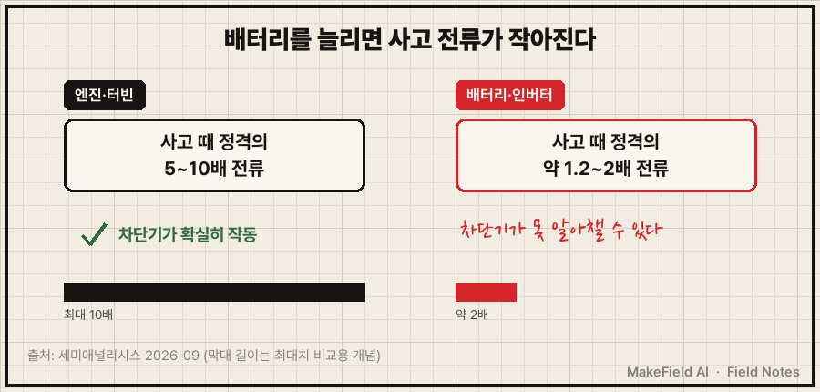

AI 데이터센터는 전기를 많이 쓰는 것으로만 알려져 있어요. 그런데 업계가 요즘 더 골치 아파하는 건 양이 아니라 '모양', 이른바 데이터센터 전력 출렁임입니다. 전기 사용량이 짧은 주기로 크게 올랐다 내렸다를 반복하거든요.
한 줄 요약: AI 학습용 GPU 수만 개가 계산과 통신을 동시에 번갈아 하면서 데이터센터 전력이 짧은 주기로 크게 출렁이고(마이크로소프트·오픈AI·엔비디아 공동 논문 2025-08), 이 출렁임은 미국 xAI 데이터센터 가스터빈에 초당 여러 번 10~20MW의 흔들림을 줬다(세미애널리시스 2026-09). 미국 국립연구소는 공진 주파수에 맞으면 50MW 규모 출렁임만으로도 광역 전력 동요가 날 수 있다고 경고했어요(PNNL 2026).
이 글은 2026년 11월 기준 공개 자료로 이 현상이 무엇인지, 왜 지금 문제가 됐는지, 이걸 잡는 데 누가 돈을 쓰고 누가 버는지 차례로 풀어 봅니다.
1. 데이터센터 전력 출렁임이란 무엇인가요
데이터센터 전력 출렁임이란 AI 학습 중 수많은 GPU가 한꺼번에 전력을 많이 썼다가 한꺼번에 적게 쓰는 일이 반복돼, 시설 전체의 전력 사용량이 파도처럼 오르내리는 현상이다.
💡 GPU — AI 계산을 하는 칩. AI 학습은 이 칩 수만 개를 한 팀처럼 묶어 돌린다.
AI 모델을 학습시킬 때 GPU들은 '각자 계산 → 서로 결과 주고받기(통신)'를 박자 맞춰 반복해요. 계산할 땐 전력을 많이 쓰고, 결과를 주고받으며 기다릴 땐 적게 씁니다. 마이크로소프트·오픈AI·엔비디아 연구진은 이 동기화된 박자 때문에 전력이 크게 흔들리고, 학습 작업이 커질수록 흔들림도 커진다고 밝혔어요(마이크로소프트·오픈AI·엔비디아 공동 논문 2025-08).
비유하면 이래요. 아파트 한 동이 동시에 에어컨을 켰다 끄는 일을 짧은 간격으로 반복한다고 생각해 보세요. 한 집이면 아무 일 없지만, 수만 집이 박자를 맞추면 변압기와 발전소가 그 박자를 그대로 받아냅니다.

그림을 글로 옮기면, GPU 한 개의 작은 출렁임이 수만 개로 겹치면서 시설 전체가 큰 톱니 모양으로 오르내리고, 그 부담이 맨 끝의 발전기와 전력망에 쌓여요.
2. 왜 지금 문제가 됐나요
데이터센터가 커지면서 출렁임의 크기가 발전기와 전력망이 버티도록 설계된 범위를 넘기 시작했고, 실제 고장 사례와 규제 경보가 2026년에 잇따랐기 때문이다.
| 어디서 | 무슨 일이 | 출처 |
|---|---|---|
| xAI '콜로서스 1'(미국 멤피스) | 가스터빈이 초당 여러 번 10~20MW씩 흔들리는 부하를 받아 축의 비틀림 진동이 생기고 축 수명이 깎였다고 분석 | 세미애널리시스 2026-09 |
| 같은 곳 | 가스터빈에 균열이 생겼다는 보도(익명 관계자, 회사는 답하지 않음) | 블룸버그 보도, 포춘 2026-08 게재 |
| 여러 데이터센터 | 출렁임을 받아내던 배터리를 몇 주~몇 달 만에 교체한 사례 보도 | 블룸버그 보도, 포춘 2026-08 게재 |
| 미국 전력망 | 230kV 송전선 고장 때 데이터센터형 부하 약 1,500MW가 한꺼번에 빠진 사례 | 유틸리티 다이브 2026-05 |
💡 비틀림 진동 — 발전기 축이 앞뒤로 비틀리며 떠는 현상. 철사를 계속 비틀었다 풀면 끊어지듯, 반복되면 축이 피로로 상한다.
💡 kV / MW — kV는 전압 단위(1kV=1,000V), MW는 전력 크기 단위(1MW=1,000kW). 1,500MW는 대형 원전 1기 반 정도다.
전력망 쪽도 움직였어요. 북미 전력망 신뢰도 기관 NERC는 2026년 5월 4일 데이터센터 같은 '연산 부하'를 대상으로 최고 단계인 레벨3 경보를 냈고, 모델링·시운전·보호·제어 등 7개 필수 조치에 대해 8월 3일까지 답하라고 요구했어요. 다만 이 조치는 벌칙이 붙는 의무 기준은 아닙니다(유틸리티 다이브 2026-05, 모건루이스 2026-05).
💡 NERC — 북미 전력망이 안 무너지도록 신뢰도 기준을 만드는 기관. 레벨3 경보는 '바로 조치하라'는 가장 높은 단계 경고다.
미국 퍼시픽노스웨스트 국립연구소(PNNL)는 AI 시설이 특정 주파수에 몰린 큰 출렁임을 오래 만든다는 점이 기존 부하와 다르다고 짚었어요. 그리고 공진 주파수에서 50MW의 강제 진동만으로도 광역 전력 동요와 'N-1' 안전 기준 위반이 생길 수 있다고 보고서에 적었습니다. 이 위험을 걸러 내는 공개 파이썬 도구 'RATLLE'도 함께 냈어요(PNNL 2026).
💡 강제 진동·공진 — 그네를 박자 맞춰 밀면 작은 힘으로도 크게 흔들리듯, 데이터센터가 전력망의 고유 박자에 맞춰 흔들면 작은 출렁임이 크게 번지는 현상.
💡 N-1 — 설비 하나가 고장 나 빠져도 전력망이 버텨야 한다는 기본 안전 기준.
3. 돈의 흐름 — 누가 사고 누가 파나요
출렁임을 흡수하는 장치(배터리·커패시터·UPS)를 사는 쪽은 데이터센터 운영사와 자가발전 개발사이고, 파는 쪽은 칩 회사·배터리 회사·전원 장비 회사다. 흡수 장치를 어디에 두느냐에 따라 돈이 다른 곳으로 흘러요.

| 흡수하는 곳 | 파는 쪽(예시) | 확인된 숫자·내용 |
|---|---|---|
| 서버 랙 안 | 엔비디아 | GB300 NVL72 전원부에 GPU당 65J 커패시터, 전원 장치 부피의 약 절반이 커패시터. 전력망이 보는 최대 수요를 최대 30% 줄인다고 주장(엔비디아 개발자 블로그 2025) |
| 건물 안 UPS | 버티브·슈나이더 일렉트릭 등 | UPS 안에서 급한 부하 변화를 처리해 배터리 반복 충·방전을 줄이는 제어 기능을 판매(버티브 백서, 회사 주장) |
| 부지 배터리 저장장치 | 테슬라 등 | xAI가 콜로서스 1 출렁임 문제로 테슬라 메가팩 150MW를 1단계로 설치(세미애널리시스 2026-09) |
| 자가발전 개발사 | 배터리 공급망 전반 | 리버티 에너지 고객 데이터센터의 배터리 출력이 평균 가스발전 용량의 50%(세미애널리시스 2026-09, 회사 CFO 2026-07 발언 인용) |
💡 J(줄) — 에너지 단위. 65J는 100W 전구를 약 0.65초 켤 수 있는 양으로, 짧은 출렁임을 메우는 '작은 물탱크'다.
💡 UPS(무정전 전원 장치) — 정전되는 순간 배터리로 전기를 이어 주는 장치. 데이터센터마다 기본으로 있다.
💡 BESS(배터리 에너지 저장장치) — 컨테이너만 한 배터리 묶음. 남는 전기를 담았다가 모자랄 때 내보낸다. 테슬라 '메가팩'이 대표 제품이다.
마지막 줄을 보면 규모가 짐작돼요. 가스발전 1GW를 짓는 자가발전 데이터센터라면 배터리도 출력 기준 약 0.5GW를 함께 붙인다는 뜻입니다(단순 계산, 리버티 에너지 고객 평균 기준). 출렁임이 '발전소를 하나 더 사는 만큼의 배터리'를 부르는 셈이에요.
엔비디아의 접근은 방향이 달라요. 작업 시작 때 전력 상한을 걸어 천천히 올리고, 작업이 끝날 땐 GPU를 일부러 더 돌려('파워 번') 전력이 뚝 떨어지지 않게 합니다. 엔비디아는 이렇게 하면 시설을 '최대치'가 아니라 '평균치'에 가깝게 설계할 수 있다고 설명했어요(엔비디아 개발자 블로그 2025).
※ 위 기업명과 수치는 산업 구조를 설명하기 위한 예시입니다. 특정 종목의 매수·매도를 권하는 글이 아닙니다.
4. 누가 이 문제를 풀고 있나요
칩 회사는 랙 안에서, 국립연구소와 전력 기관은 전력망 규칙으로, 데이터센터 운영사는 배터리로 각각 다른 층을 맡고 있다.
- 칩·클라우드 회사: 마이크로소프트는 엔비디아와 함께 GB200부터 전력 평활 기능을 개발했고, 구글·메타와 대규모 AI 학습 전력 안정화의 공통 기준을 만드는 업계 작업을 시작했다고 밝혔어요(마이크로소프트 애저 블로그 2025).
- 국립연구소: PNNL이 데이터센터 진동 위험을 걸러 내는 공개 도구 RATLLE을 냈습니다(PNNL 2026).
- 전력 기관: NERC는 2026년 12월 31일까지 등록 기준과 신뢰도 표준 개정안을 제출할 계획이라고 미국 연방에너지규제위원회(FERC)에 밝혔어요(유틸리티 다이브 2026-05).
- 데이터센터 신뢰도 기관: 업타임 인스티튜트는 반복되는 출렁임의 주원인이 AI '학습'이고, '추론'은 비슷한 패턴을 만들지 않는다고 정리했어요(업타임 인스티튜트 2026-07).
💡 학습 vs 추론 — 학습은 AI를 가르치는 단계(GPU 수만 개가 박자 맞춰 일함), 추론은 다 배운 AI가 질문에 답하는 단계(요청이 제각각 들어옴).
5. 언제 풀리나요, 한계는 무엇인가요
칩 쪽 평활 기능과 전력망 규칙이 2026~2027년에 함께 자리 잡는 중이지만, 둘 다 문제를 일부만 덜어 준다.
- 칩 평활은 짧은 출렁임용이다: GPU당 65J는 짧은 출렁임용이에요. 전력망과 떨어져 혼자 도는 데이터센터의 보호·재기동 문제까지 없애진 못합니다(추정).
- 30%는 최대치다: 엔비디아 자료는 '최대 30%'라고 적었고, 회사 시험 결과예요(엔비디아 개발자 블로그 2025). 고온에서 전해 커패시터 신뢰성이 떨어질 수 있다는 지적도 있습니다(EE뉴스 유럽 2025).
- 배터리만 늘리면 고장 전류가 약해진다: 엔진·터빈은 단락 사고 때 정격의 5~10배 전류를 흘려 차단기를 확실히 끊지만, 배터리·태양광 같은 인버터 기반 전원은 약 1.2~2배에 그쳐 기존 과전류 보호의 여유가 사라질 수 있어요(세미애널리시스 2026-09).
- 피해 보도는 익명 출처가 섞여 있다: 콜로서스 터빈 균열과 배터리 조기 교체는 관계자 전언 보도라 회사 공식 확인은 아닙니다(블룸버그 보도, 포춘 2026-08 게재).
- NERC 경보는 의무가 아니다: 레벨3 필수 조치는 벌칙이 없는 권고이고, 의무 표준은 아직 만드는 중이에요(모건루이스 2026-05).
💡 인버터 — 배터리의 직류 전기를 우리가 쓰는 교류로 바꾸는 전력전자 장치. 전자 회로가 전류를 제한해서 사고 때 큰 전류를 못 흘린다.
💡 고장 전류 — 합선(단락) 사고 때 순간적으로 흐르는 큰 전류. 이게 커야 차단기가 '사고다'를 알아채고 끊는다.

그림을 글로 정리하면, 출렁임을 잡으려고 배터리를 늘릴수록 사고 때 흐르는 전류가 작아져 보호 장치 설계를 다시 해야 한다는 숙제가 생겨요. 하나를 고치면 다른 칸이 움직이는 구조입니다.
자주 묻는 질문
Q. 챗GPT에 질문할 때도 전력이 이렇게 출렁이나요?
업타임 인스티튜트는 반복되는 큰 출렁임의 주원인을 AI 학습으로 봤고, 추론(질문에 답하는 단계)은 비슷한 패턴을 만들지 않는다고 했어요(업타임 인스티튜트 2026-07).
Q. 전력 출렁임이 정전으로 이어질 수 있나요?
PNNL은 공진 주파수에서 50MW 강제 진동만으로도 광역 전력 동요와 N-1 기준 위반이 생길 수 있다고 분석했어요(PNNL 2026). 실제 정전 사례로 확인된 건 아니고, 위험 평가 단계입니다.
Q. 엔비디아 GB300이 나오면 문제가 끝나나요?
일부만 줄어요. 엔비디아는 최대 수요를 최대 30% 줄인다고 주장하지만(엔비디아 개발자 블로그 2025), 짧은 출렁임을 메우는 완충이라 부지 배터리와 보호 설계 문제는 남습니다(추정).
오늘의 용어 정리
- 데이터센터 전력 출렁임 — AI 학습 중 GPU들이 박자 맞춰 전력을 썼다 줄였다 하며 시설 전력이 크게 오르내리는 현상
- GPU — AI 계산용 칩
- 비틀림 진동 — 발전기 축이 비틀리며 떠는 현상, 반복되면 축이 상함
- NERC / 레벨3 경보 — 북미 전력 신뢰도 기관 / 그 기관의 최고 단계 경고
- 강제 진동·공진 — 외부가 박자 맞춰 흔들어 작은 힘이 크게 번지는 현상
- N-1 — 설비 하나가 빠져도 버텨야 하는 안전 기준
- J(줄) — 에너지 단위
- UPS — 정전 순간 배터리로 전기를 이어 주는 장치
- BESS — 대형 배터리 에너지 저장장치
- 학습 / 추론 — AI를 가르치는 단계 / 다 배운 AI가 답하는 단계
- 인버터 — 직류를 교류로 바꾸는 전력전자 장치
- 고장 전류 — 합선 사고 때 순간적으로 흐르는 큰 전류
지난 Next Field에서는 데이터센터가 직접 발전소를 지으면서 생긴 가스터빈 줄을 봤어요. 오늘은 그 발전소가 막상 돌아가기 시작하자 생긴 다음 숙제를 따라가 봤습니다. 출렁임은 칩 안에서 지우는 게 나을까요, 부지 배터리로 받는 게 나을까요?
출처
[1] 마이크로소프트·오픈AI·엔비디아 공동 논문(2025-08) — AI 학습은 계산과 통신을 동기화해 번갈아 하며 GPU 전력이 크게 흔들리고, 작업이 커질수록 흔들림이 커진다는 분석과 소프트웨어·GPU·시설 단위 대책
→ https://arxiv.org/abs/2508.14318
[2] 세미애널리시스(2026-09) — 콜로서스 1 가스터빈이 초당 여러 번 10~20MW 흔들림을 받아 비틀림 진동·축 수명 감소, 테슬라 메가팩 150MW 1단계 설치, 엔진·터빈 고장 전류 5~10배 대 인버터 기반 1.2~2배, 리버티 에너지 고객 배터리 출력 평균 가스 용량의 50%
→ https://newsletter.semianalysis.com/p/what-is-so-hard-about-behind-the
[3] 엔비디아 개발자 블로그(2025) — GB300 NVL72 전원부 GPU당 65J 커패시터, 시작 시 전력 상한·종료 시 파워 번, 최대 수요 최대 30% 감소 주장, 평균치 기준 설계 가능
→ https://developer.nvidia.com/blog/how-new-gb300-nvl72-features-provide-steady-power-for-ai/
[4] PNNL(2026) — AI 시설은 특정 주파수에 몰린 큰 출렁임을 오래 만들고, 공진 주파수 50MW 강제 진동만으로 광역 전력 동요·N-1 위반 가능, 공개 도구 RATLLE
→ https://www.pnnl.gov/publications/methodology-evaluate-grid-reliability-impact-oscillations-induced-large-loads
[5] 유틸리티 다이브(2026-05) — NERC 2026년 5월 4일 레벨3 경보, 7개 필수 조치·8월 3일 답변 기한, 230kV 고장 때 데이터센터형 부하 약 1,500MW 이탈, 2026년 말까지 표준 개정안 제출 계획
→ https://www.utilitydive.com/news/nerc-issues-rare-level-3-alert-over-data-center-load-losses/819295/
[6] 모건루이스(2026-05) — NERC 레벨3 필수 조치는 벌칙 없는 비의무 조치라는 법률 해설
→ https://www.morganlewis.com/blogs/powerandpipes/2026/05/nerc-alert-moves-data-centers-from-emerging-risks-to-planning-obligations
[7] 포춘(2026-08, 블룸버그 보도) — AI 출렁임으로 배터리·발전기·냉각 설비가 일찍 닳음, 배터리 몇 주~몇 달 내 교체 사례, 콜로서스 터빈 균열(익명 관계자)
→ https://fortune.com/2026/08/06/ais-volatile-power-demand-is-damaging-its-own-data-centers/
[8] 업타임 인스티튜트(2026-07) — 시설 단위 반복 출렁임의 주원인은 AI 학습, 추론은 비슷한 패턴을 만들지 않음
→ https://intelligence.uptimeinstitute.com/resource/handling-ai-power-fluctuations-root-cause
[9] 마이크로소프트 애저 블로그(2025) — 엔비디아와 GB200 전력 평활 기능 공동 개발, 구글·메타와 AI 학습 전력 안정화 공통 기준 작업 시작
→ https://techcommunity.microsoft.com/blog/azurecompute/power-stabilization-for-ai-training-datacenters/4460937
[10] 버티브 백서 — UPS 안에서 급한 부하 변화를 처리해 배터리 반복 충·방전을 줄이는 제어 기능(회사 주장)
→ https://www.vertiv.com/4aebc7/globalassets/content---assets-2025/documents/advanced-ups-controls-for-ai-workloads-wp-en-gl-sl-80384-web.pdf
[11] EE뉴스 유럽(2025) — 엔비디아 전원부 소개와 함께 전해 커패시터가 고온 환경에서 신뢰성이 낮을 수 있다는 지적
→ https://www.eenewseurope.com/en/nvidia-details-ai-power-supply-adds-innoscience-gan